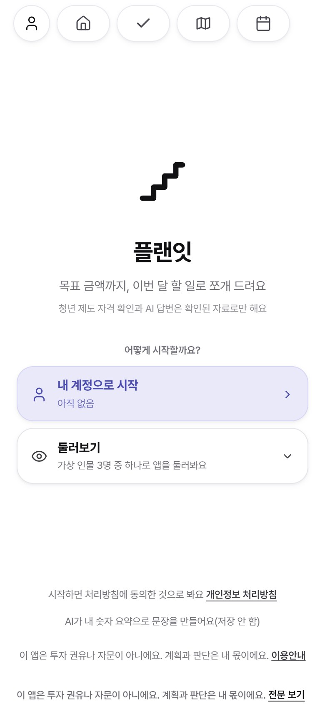
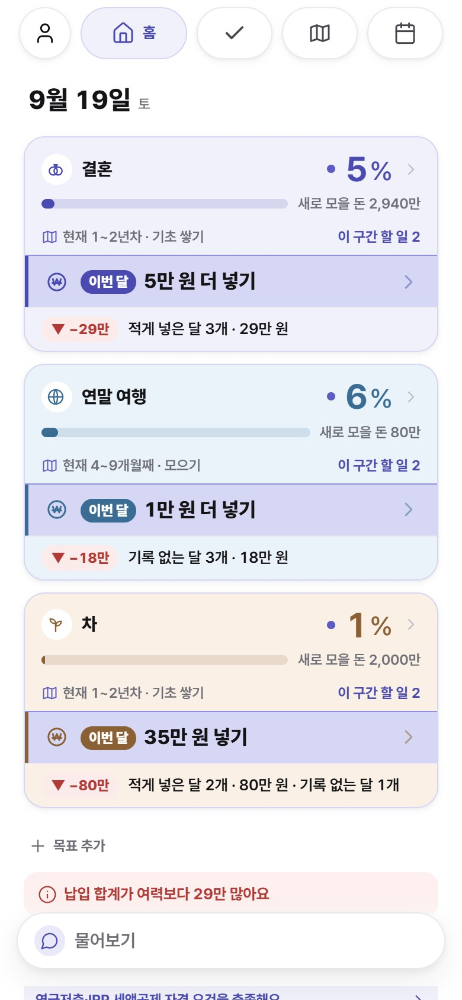
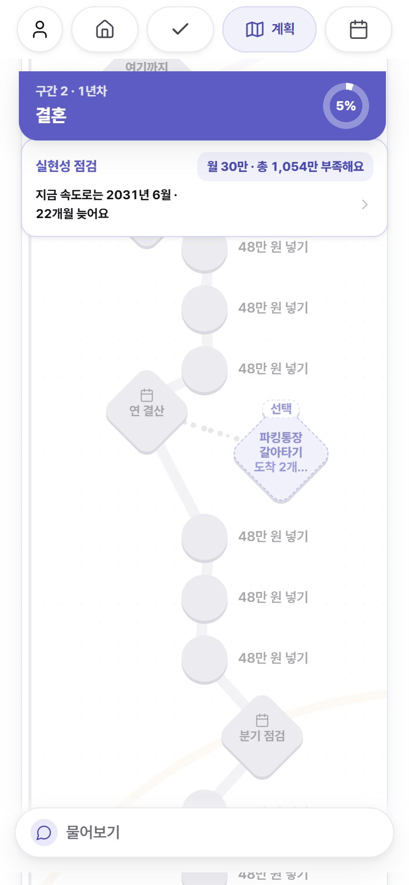
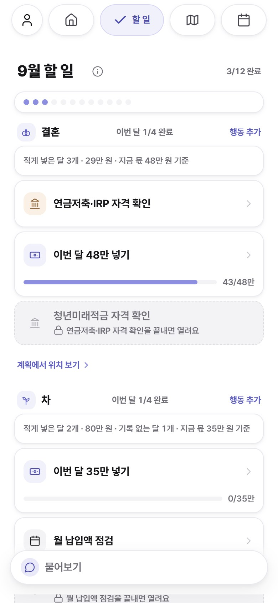
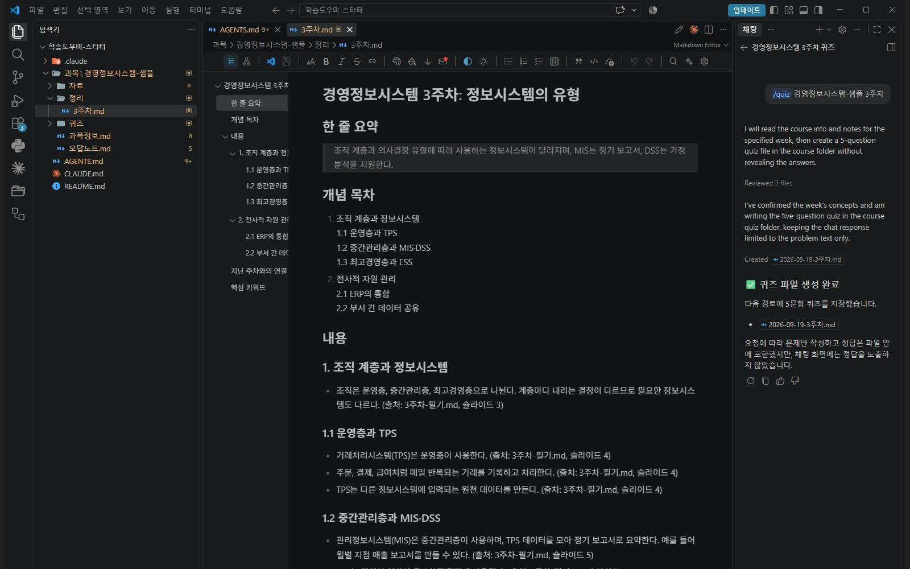
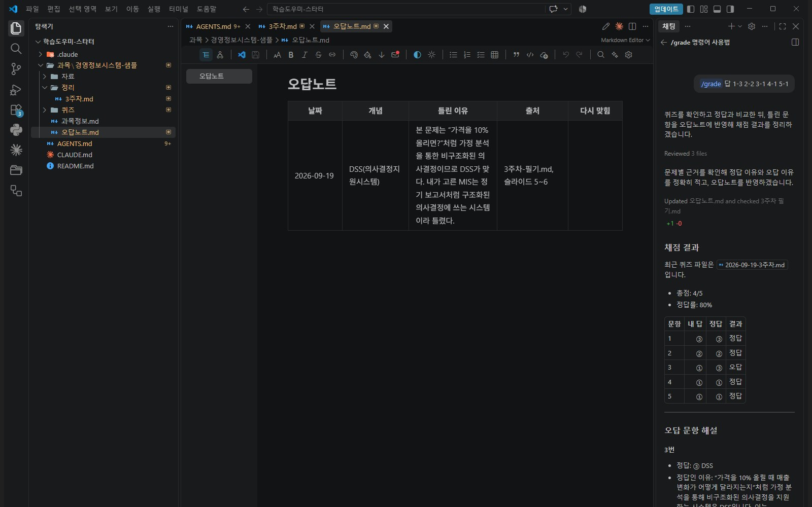
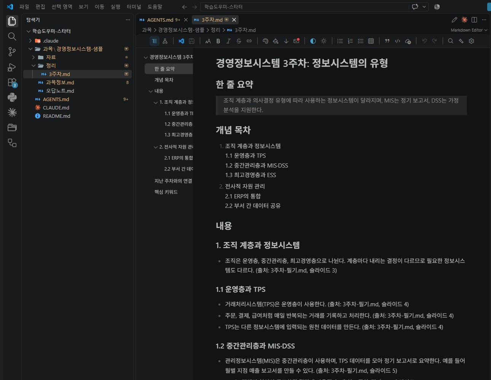

에이전틱 AI와
학습도우미
하네스를 갖추면 AI가
매번 같은 품질로 공부를 돕는다
오늘 그 하네스를 직접 만든다
오늘 순서 · 다섯 파트
오늘은 다섯 파트, 끝나면 내 과목 퀴즈가 손에 있다
남는 것 · 내 과목 퀴즈 1회 · 오답노트 1건 · 규칙 v2
지금은 챗봇 앱에서 묻고 답을 받는다
웹 브라우저나 앱에서 채팅창을 연다
ChatGPT
OpenAI
Gemini
Claude
Anthropic
채팅창에 묻고 싶은 것을 적는다
답은 채팅창 안에만 있다
쓸 곳에 사람이 붙여 넣는다
그래서 매번 다시 설명하고, 답을 복사해 붙이고,
같은 실수가 반복된다
쓸 때마다 같은 설명을 처음부터 한다
붙여 넣고 고치는 일은 사람이 한다
다음 대화에서도 같은 실수가 나온다
다음 대화에서 다시 처음부터
매번 같은 품질을 만드는 작업 환경이 하네스다
오늘 그 하네스를 직접 만든다
얻는 것 = 챗봇과 에이전트의 차이를 한 문장으로 말한다
같은 모델도 서비스에 따라 다르게 답한다
근거Anthropic은 앱에만 시스템 지침을 얹고 API에는 적용하지 않는다고 공개했다 ①
챗봇은 사람이 복사·붙여넣기하고,
에이전트는 AI가 끝까지 루프를 돈다
복사·붙여넣기는 사람이 한다
복사한다
고친다
묻는 말에 답만 준다
루프를 도는 것은 AI
읽는다
실행한다
확인한다
목표만 준다
퀴즈 만들기: 챗봇은 4단계, 에이전트는 한 줄
같은 일 · 지난주 필기로 퀴즈 만들기
notes 폴더 3주차 필기로읽을 자료
퀴즈 만들어만들 것
quiz 폴더에 저장해저장할 곳
에이전트 = 모델 + 도구 + 루프 + 실행 환경
목표를 주면 도구를 쓰고, 결과를 보고 다시 고친다
모델
다음에 올 말을
예측한다
요청 한 줄을
읽는다
도구
파일을 읽고 고치고
명령을 실행한다
필기를 읽고
퀴즈 파일을 쓴다
루프
결과를 보고
다시 고친다
만든 퀴즈를 보고
다시 고친다
실행 환경
AI가 직접 여는
파일과 터미널
notes 폴더 ·
quiz 폴더
순서를 사람이 정하면 워크플로,
AI가 정하면 에이전트
사람이 정해 둔 순서대로 AI와 도구가 움직인다②
AI가 스스로 순서와 도구 사용을 정한다②
얻는 것 · 하네스 구성 요소 5개를 알고 내 도구에 대응시킨다
말로 매번 하던 설명을
파일로 고정한다
AGENTS.md
하네스 · 에이전트가 매번 같은 품질로 일하게 만드는 모델 바깥의 작업 환경
하네스 구성 요소 5개:
규칙 · 명령 · 자료 · 기록 · 검수
지난 학기 PDF 48개, 슬라이드 1,607장을
이 하네스로 처리했다
사례 · 운영자의 university 프로젝트
원본 → 정리본 → 시험 정리본, 3단계로 돌렸다
단계마다 맡은 스킬과 서식이 따로 있다 · 과목마다 규칙 파일 1개
6과목 48개
개념 목차 · 키워드
오답 보기 분석
한계: 오답이 다음 공부로 돌아가는 피드백 루프,
퀴즈 검수
university 프로젝트에 있던 하네스
오늘 더하는 구성 요소
이 둘을 더한 구조를 직접 만든다
하네스도 줄여야 한다:
상시 규칙 335줄 → 123줄
2026-08 운영자 하네스 정리 · 규칙은 쌓이기만 하면 방해가 된다
내 하네스는 3층이다: 전역 · 작업공간 · 프로젝트
운영자 하네스 · 2026-09-19 기준 · 규칙 파일 3층에 스킬 · 메모리 · 훅이 붙는다
~/.claude/CLAUDE.md모든 작업에 적용~/claude/CLAUDE.md작업공간 안의 모든 프로젝트프로젝트별 CLAUDE.md그 프로젝트 폴더 안규칙 파일에는 판단 기준을 적는다
전역 규칙 원문 6줄 · 정해진 작업 절차는 스킬로 따로 둔다
규칙 = 매번 지킬 기준
스킬 = 부를 때 쓰는 절차
훅은 사람이 말하지 않아도 규칙을 강제한다
훅 = 정해진 시점에 자동으로 실행되는 검사 · 오른쪽은 이 세션에서 실제로 뜬 메시지
git push) 하나다이 덱은 에이전트 5개가 8장씩 나눠 만들었다
2026-09-19 제작 · 사람은 브리프와 검수를 맡는다
브리프 1장 사람
장마다 구성과 금지 규칙
에이전트 5개 병렬
8장씩 · 각 8~11분
조립
조립 스크립트가 40장으로 합친다
측정
넘침 · 글자 크기 · 이미지
눈 검수 사람
40장 스크린샷을 눈으로 본다
수정
2건 수정 → 운영자 피드백으로 개정

운영자의 실제 작업 화면 · Orca에서 Claude Code 세션, 아래에 컨텍스트·사용량 표시
얻는 것 · AI로 기획부터 배포까지 가는 순서를 본다
18일 동안 AI를 쓴 순서는 9단계였다
2026 금융 AI Challenge · 금융보안원 주최 · 개인 참가
딥리서치 3건
확정
적대 검증
→ 구현 착수
병렬 구현
Supabase · Gemini
31명 테스트
6회
PDF + URL
09-07 제출
18일 뒤 결과물: 청년 목표 플래너 「플랜잇」

목표 금액 → 이번 달 할 일

목표별 진행률 · 이번 달 금액

구간별 할 일 · 실현성 점검

이번 달 행동 목록
문장 말고 원인을 고치자 점수가 올랐다
AI 블라인드 심사 09-04 ~ 09-05 · 9항목 합계
1~4차에 고친 것은 심사자가 본 문장이었다
판정 함수 · 데이터 원천을 고치자 올랐다
스크립트가 「통과」라고 한 캡처에
모순 문장이 3번 있었다
AI로 만들려면 도구마다 알아야 할 수준이 있다
「플랜잇」 배포에 쓴 것 · Vercel · Supabase · Gemini
코드 저장소와
변경 이력
커밋 · 푸시 개념
언제든 되돌릴 수 있다는 것
API 키를 올리면
공개된다
웹 배포
저장소를 연결하면 푸시할 때마다 자동 배포
환경 변수 넣는 곳
무료 요금제는
비상업 전용
데이터베이스 · 로그인
서버 함수
데이터는 표에 저장 · 공개 키와 비밀 키 구분
보안 규칙이 필요
1주 안 쓰면
자동 정지
앱 안에서 AI 호출
API 키 = 요금이자 비밀
코드에 넣지 않는다
한도와 요금
학생이 혼자 갈 수 있는 곳은 3단계까지다
폴더 안 자동화부터 배포까지
AI로 만들 수는 있다 · 개인정보는 넣지 않는다
AI가 쓴 티를 지우는 규칙
결론적으로,4 이는 학습 효율을 높일 수 있으며3
이를 통해 성과를 강화할 수 있다고 볼 수 있다3
학습 효율이 올라 성과가 는다
캡처와 결과물은 눈으로 본다
얻는 것 · VS Code에서 Agent 요청 1개를 결과 파일까지, 학생 인증 신청까지
VS Code는 폴더·편집·터미널·AI를
한 화면에 모은다
IDE는 편집·폴더·터미널·AI 채팅을 모은 작업 프로그램 · VS Code는 무료

1 2 3탐색기
왼쪽 · 폴더와 파일
편집기
가운데 · 파일 내용
Copilot 채팅
오른쪽 · AI에게 요청
터미널은 아래 패널
(보기 → 터미널)
규칙과 스킬은 전부 .md: 기호 3개면 된다
Ask는 답만, Agent는 파일을 고친다
Copilot 채팅의 모드 두 가지 · 차이는 파일을 건드리는가
답만 한다
하는 일파일을 읽고 고치고 실행한다
하는 일Agent는 파일을 바로 만들고 고친다
/grade 실행 뒤 화면 · 채점 4/5, 틀린 1문항이 오답노트.md에 한 줄로 기록됐다

파일 만들기·고치기는
확인 없이 바로 적용된다
터미널 명령은 실행 전에
허용을 묻는다
학생 인증을 하면 월 200 크레딧이 무료로 나온다
 Copilot 요금제 화면
Copilot 요금제 화면한도
비공개
채팅·에이전트 한도가 공개돼 있지 않다
매주 쓰거나 11월 팀 구현이면 모자랄 수 있다
 Student Developer Pack
Student Developer Pack월 200 크레딧
무료
며칠에서 2주가 걸려 오늘 신청한다
캠퍼스에서 신청할 때 통과율이 가장 높다
신청은 4단계, 결과는 세션 끝에 본다
상세 절차는 배포 자료 「GitHub 학생 인증 가이드」에 있다
영문 재학증명서와 똑같이
휴대폰에서 다시 로그인
on school letterhead
카메라로 찍어 제출
얻는 것 = 내 과목 퀴즈 1회 · 오답노트 1건 · 규칙 v2
폴더 하나에 규칙 · 스킬 3개 · 과목 자료
스타터 폴더는 완성본이다. VS Code로 열고 실행만 한다
규칙 · AGENTS.md
Copilot과 Claude Code가 둘 다 읽는다
명령 · 스킬 3개
/organize · /quiz · /grade
한 단어로 부른다
기록 · 오답노트.md
틀린 문항이 쌓여
다음 퀴즈에 다시 쓰인다
퀴즈 → 채점 → 오답노트 → 다음 퀴즈
/quiz는 정리본과 오답노트를 같이 읽는다
그래서 다음 퀴즈는 틀린 것부터 나온다다시 읽기보다 문제 풀기, 틀리면 해설
피드백 루프를 이렇게 짠 근거는 학습 원리 2개다
인출 연습: 다시 읽기보다 문제 풀기④
요약을 다시 읽는 것보다
퀴즈로 문제를 푸는 것이 오래 남는다
/quiz가 정리본으로 5문항을 낸다
틀리면 해설을 본다⑤
해설을 안 보면
틀린 보기를 사실로 기억한다
/grade가 틀린 문항에 해설을 쓴다
규칙 파일에 들어 있는 4줄
AI가 매번 지킬 것을 파일에 적어 둔다
출처가 없는 문항은 버린다
오답노트에 기록한다
매 요청에 적용
AI가 항상 지키는 규칙
두 도구가 같이 읽는다
Copilot · Claude Code
오늘 한 줄을 더한다
마음에 안 드는 점 1개
→ 규칙 v2
university에서 가져온 것과 버린 것
지난 학기 6과목 구조에서 입문자에게 맞는 것만 옮겼다
퀴즈가 틀리는 네 가지와 막는 규칙
출처 없는 문항은 버린다
단순 암기로 쏠린다 개념 문제 3 + 응용 문제 2처럼
비율을 규칙에 적는다
자기 실수를 잘 못 본다 다른 모델에 퀴즈를 붙여 넣어
정답을 확인한다
/grade채점이 해설을 쓰게 한다
나머지 3가지(정답 쏠림 · 뻔한 오답 보기 · 과목과 안 맞는 문제)는 학습도우미 팁에 있다
하네스를 만들 때 지킬 네 가지
스킬 호출어가 겹치지 않게 한다
university에서 “소스 만들어줘”가
엉뚱한 스킬을 불렀다
하지 말아야 할 것은 명시한다
“명령만 출력”만 적자 AI가 매번 폴더부터 뒤졌다
“사전 확인 금지”를 적고 나서 고쳐졌다
실패는 기록하고 규칙 한 줄로 흡수한다
같은 실수가 두 번 나오면
규칙을 고칠 때다
규칙은 주기적으로 줄인다
“지우면 AI가 실수하나?”를 물어 아니면 지운다
상시 규칙 335줄 → 123줄
나머지 4가지(과목 규칙 분리 · 경로 안 박기 · 반복한 일만 스킬로 · 단순한 것부터)는 학습도우미 팁에 있다
두 트랙: 기본 실습 / 내 하네스 점검
완성본을 받아 4단계로 실습한다
내 하네스를 점검하고 없는 구성 요소만 가져온다
무료로도 끝까지: 요청 4번, 막히면 붙여넣기
규칙과 스킬은 완성본으로 배포하고 AI는 실행만 한다 · 입력은 강의 1회분
→ 퀴즈 5문항
+ 오답노트 기록
= 규칙 v2
스킬 내용을 Gemini · ChatGPT 무료에 붙여 넣어 이어 간다
실측 학생 인증 전 계정으로 요청 3번, 3번 모두 완료(2026-09-19)

/organize실습 시작: 자료 받기
이름을 누르면 내려받는다 · 스타터를 받아 VS Code로 폴더째 연다
AGENTS.md · CLAUDE.md(한 줄) · 스킬 3개(organize · quiz · grade) · 샘플 과목
가져간 것·버린 것 표 · 퀴즈 주의점 7 · 하네스 팁 8 · 점검 트랙 6항목
신청 4단계 상세 · 반려되면 사유대로 고쳐 다시 낸다
내 도구로 옮기면 오답노트의 작업 주체가 달라진다
CLAUDE.md에 @AGENTS.md 한 줄
NotebookLM 맞춤 지침또는 Gem 지침 Project 지침
“정리·퀴즈·채점” 지침 안에 키워드
소스로 연결하면 자동 반영 본인이 붙여 넣은 뒤
파일을 다시 올린다
VS Code 에이전트는 AI가 직접 쓰고, 웹 챗봇은 사람이 붙여 넣는다
오늘 만든 하네스로 이번 주 3번 쓴다
하네스를 갖추면 AI가 매번 같은 품질로 공부를 돕는다
출처
본문 장에는 각주 번호만 표기 · 이름을 누르면 원문이 열린다
Copilot Student 켜기
ChatGPT Projects